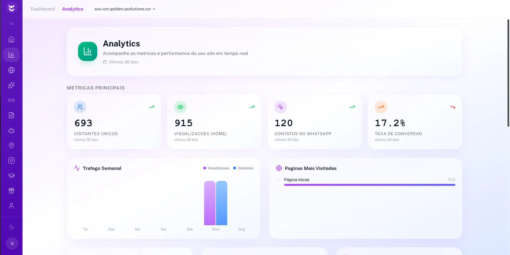

Quer turbinar seu site com dados de verdade?
Me manda o link do seu site que eu te mostro, na hora, o que dá pra descobrir sobre quem entra nele.
Falar no WhatsAppTodo dia entra gente no seu site e vai embora sem falar com você. O Analytics da Axolutions mostra, em cores e números claros, onde clicam, onde travam e onde você está perdendo dinheiro. Chega de achismo.

Um gostinho de como o painel respira. Os números abaixo são um exemplo ilustrativo de demonstração, não dados de um cliente real. No seu painel, tudo isso é o movimento verdadeiro do seu site.
Visitantes no mês
0
+18% vs mês passado
Cliques no WhatsApp
0
+31% vs mês passado
Taxa de conversão
0%
visita que vira conversa
Páginas vistas
0
nos últimos 30 dias
Visitantes por dia
última semana
Passe o mouse nas células. Onde está vermelho, é onde as pessoas mais tocam.
Cada número aqui é uma decisão que você deixa de tomar no escuro. Sem planilha, sem termo técnico, sem enrolação.
Enxergue em cores exatamente onde as pessoas clicam e onde nem chegam. Aquele botão que você achava importante talvez ninguém veja.
Veja quem está no seu site agora, de onde chegou e por onde anda. Descubra se aquele post no Instagram virou visita de verdade.
Saiba qual conteúdo prende as pessoas e qual faz elas fugirem. Coloque energia no que já funciona e conserte o que espanta cliente.
A métrica que paga a conta: quantos visitantes clicaram pra te chamar. Não mede curtida, mede conversa que pode virar venda.
Site bonito sem dado é aposta. Com o Analytics, cada mudança que você faz tem motivo e tem resultado pra provar.
Chega de mexer no site no escuro e torcer. Você vê o que os visitantes realmente fazem e muda com base em fato, não em palpite de fim de semana.
Descubra em qual página as pessoas desistem e onde você está perdendo cliente logo antes de ele te chamar. Tapar esse buraco é dinheiro novo, sem gastar mais em anúncio.
Trocou um texto ou um botão? Compare o antes e o depois e saiba, na prática, se rendeu mais contato. Você para de discutir no achismo e passa a mostrar número.
Me manda o link do seu site que eu te mostro, na hora, o que dá pra descobrir sobre quem entra nele.
Falar no WhatsAppO Analytics é só uma peça do sistema. Tudo conversa entre si na mesma conta.
Site com IA, atendente no WhatsApp, analytics, link na bio, Google Meu Negócio e cursos. Tudo num lugar só.